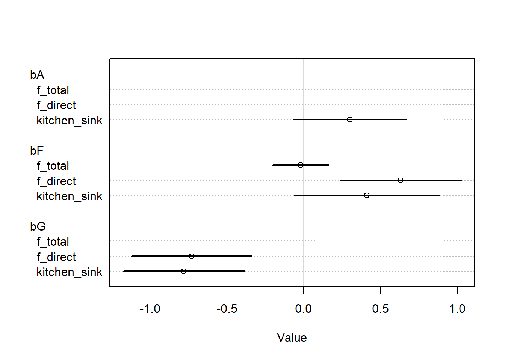

This homework covers the material from Lectures 7 and 8, and the content from book Chapters 7, 8, and 9. The questions are reproduced almost identically from Richard McElreath’s original assignment, I did not write them. I only wrote these solutions.
library(rethinking)
Loading required package: rstan
Loading required package: StanHeaders
Loading required package: ggplot2
rstan (Version 2.21.5, GitRev: 2e1f913d3ca3)
For execution on a local, multicore CPU with excess RAM we recommend calling
options(mc.cores = parallel::detectCores()).
To avoid recompilation of unchanged Stan programs, we recommend calling
rstan_options(auto_write = TRUE)
Do not specify '-march=native' in 'LOCAL_CPPFLAGS' or a Makevars file
Loading required package: cmdstanr
This is cmdstanr version 0.5.3
- CmdStanR documentation and vignettes: mc-stan.org/cmdstanr
A newer version of CmdStan is available. See ?install_cmdstan() to install it.
To disable this check set option or environment variable CMDSTANR_NO_VER_CHECK=TRUE.
Loading required package: parallel
rethinking (Version 2.21)
Attaching package: 'rethinking'
The following object is masked from 'package:rstan':
stan
The following object is masked from 'package:stats':
rstudent
1. Revisit the marriage, age, and happiness collider bias example from Chapter 6. Run models m6.9 and m6.10 again (pages 178-179). Compare these two models using both PSIS and WAIC. Which model is expected to make better predictions, according to these criteria, and which model yields the correct causal inference?
OK, first we will fit the models. Since these are exactly the same as in the book, the results will be similar and I won’t spend a lot of time on them.
# Data setupd <-sim_happiness(seed =1977, N_years =1000)d2 <- d[d$age >17, ]d2$A <- (d2$age -18) / (65-18)d2$M <- d2$married +1set.seed(134123)# First model: m6.9<-quap(alist( happiness ~dnorm(mu, sigma), mu <- a[M] + bA * A, a[M] ~dnorm(0, 1), bA ~dnorm(0, 2), sigma ~dexp(1) ),data = d2 )# Second modelm6.10<-quap(alist( happiness ~dnorm(mu, sigma), mu <- a + bA * A, a ~dnorm(0, 1), bA ~dnorm(0, 2), sigma ~dexp(1) ),data = d2 )
OK, now we want to score the models by PSIS and WAIC. Let’s do PSIS first.
OK, so for this model they are basically the same. But either way, we see that model m6.9, which stratifies by marriage, is better atprediction! However, we know that m6.10 actually makes the correct causal inference. This should not surprised us, because colliders contain information – even if they distort causal estimates, including them will often work better for prediction.
2. Reconsider the urban fox analysis from last week’s homework. On the basis of PSIS and WAIC scores, which combination of variables best predicts body weight? What causal interpretation can you assign each coefficient from the best scoring model?
First I’ll fit the two models that we were using at the end of last week’s homework – the model for the direct effect of \(F\) and the model for the total effect of \(F\) (which we recall that we could not accurately estimate due to an unmeasured confounder). We’ll also add an additional “kitchen sink” model that includes age (even though it is a precision parasite), just because we also have that. There are seven different models that we could choose, but I think these three will probably be sufficient.
# Set up datadata(foxes)D <- foxes |> dplyr::select(F = avgfood,A = area,W = weight,G = groupsize ) |> dplyr::mutate( dplyr::across(dplyr::everything(), standardize) ) |>as.list()# Fit the two modelsset.seed(193482)kitchen_sink <- rethinking::quap(flist =alist( W ~dnorm(mu, sigma), mu <- a + bF * F + bG * G + bA * A, a ~dnorm(0, 2), bF ~dnorm(0, 2), bG ~dnorm(0, 2), bA ~dnorm(0, 2), sigma ~dexp(1) ),data = D,control =list(maxit =500) )f_direct <- rethinking::quap(flist =alist( W ~dnorm(mu, sigma), mu <- a + bF * F + bG * G, a ~dnorm(0, 2), bF ~dnorm(0, 2), bG ~dnorm(0, 2), sigma ~dexp(1) ),data = D,control =list(maxit =500) )f_total <- rethinking::quap(flist =alist( W ~dnorm(mu, sigma), mu <- a + bF * F, a ~dnorm(0, 2), bF ~dnorm(0, 2), sigma ~dexp(1) ),data = D,control =list(maxit =500) )coeftab(kitchen_sink, f_direct, f_total) |>coeftab_plot(pars =c("bA", "bF", "bG"))

OK, now we can calculate the PSIS and WAIC for all of these.
A, G, F F, G F
WAIC 323.9801 324.5721 334.1936
lppd -156.4935 -157.8467 -164.32
penalty 5.496565 4.43933 2.776743
std_err 16.89324 17.05316 13.91089
Here we get a little bit of a competition, but not much of one. We can see that the “kitchen sink” model wins by less than a point for PSIS, but the direct causal model wins by less than a point for WAIC. That’s obviously due to approximation error, it doesn’t matter which one wins by just a few points. Clearly we can see that the model for the direct causal effect beats out the model for the total causal effect, which makes sense because both of these variables encode unique information about the outcome (from our causal model, \(A\) does not).
For the best model, we can infer the direct causal effects of \(F\) and \(G\), but not the total causal effect of \(F\).
3. Build a predictive model of the relationship shown on the cover of the book, the relationship between the timing of cherry blossoms and March temperature in the same year. The data are found in data(cherry_blossoms). Consider at least two different models (functional relationships) to predict doy with temp. Compare them with PSIS or WAIC.
Suppose March temperatures reach 9 degrees by the year 2050. What does your best model predict for the predictive distribution of the day-in-year that the cherry trees will blossom?
4. The data in data(Dinosaurs) are body mass estimates at different estimated ages for six different dinosaur species. Choose one or more of these species and make a predictive model of body mass using age as a predictor. Consider two or more model types for the function relating age to body mass and score each using PSIS and WAIC.
Which model do you think is best, on predictive grounds? On scientific grounds? If your answers to these questions differ, why?